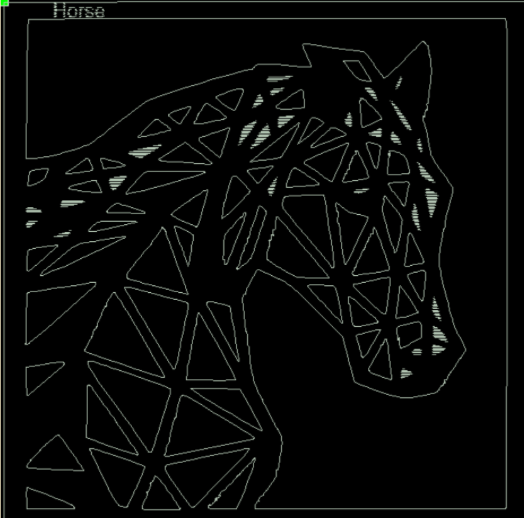
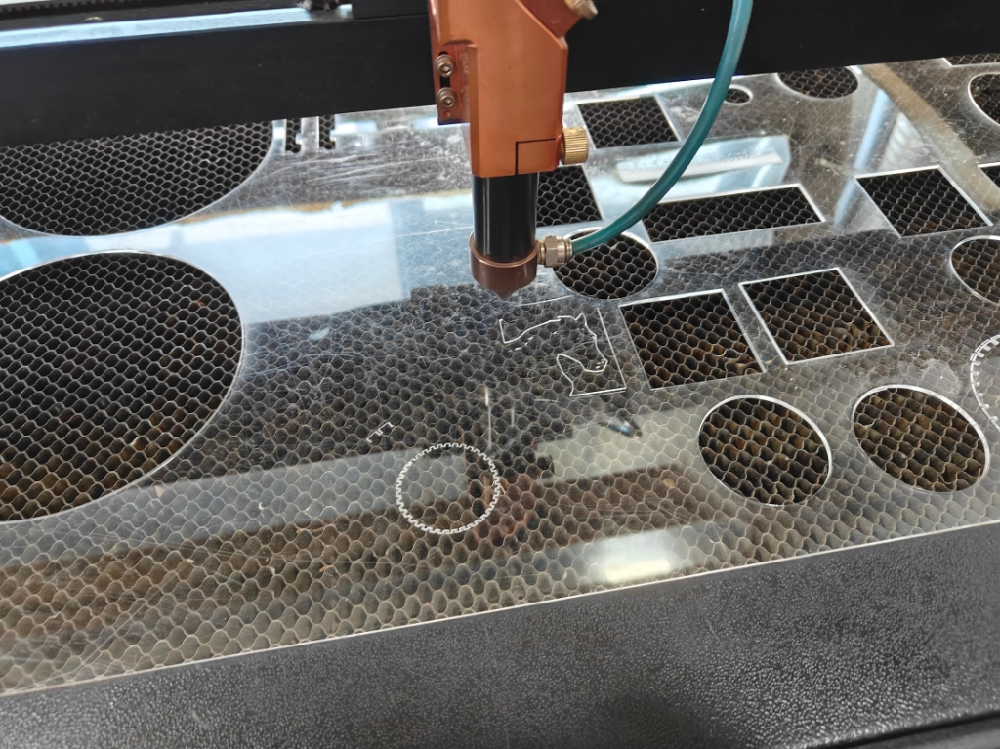
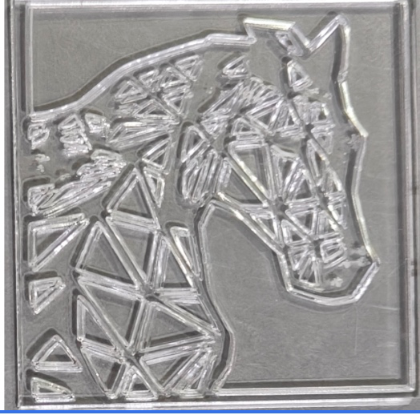
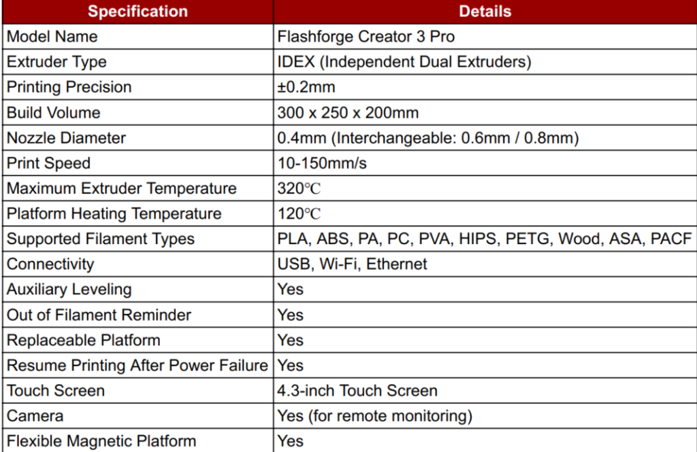
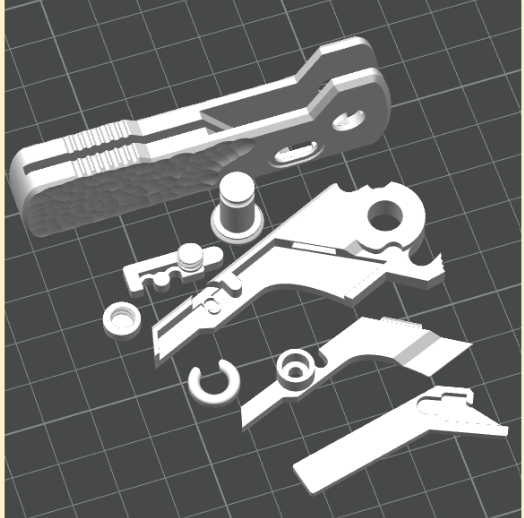
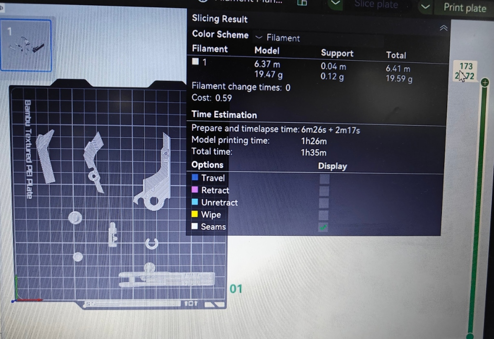
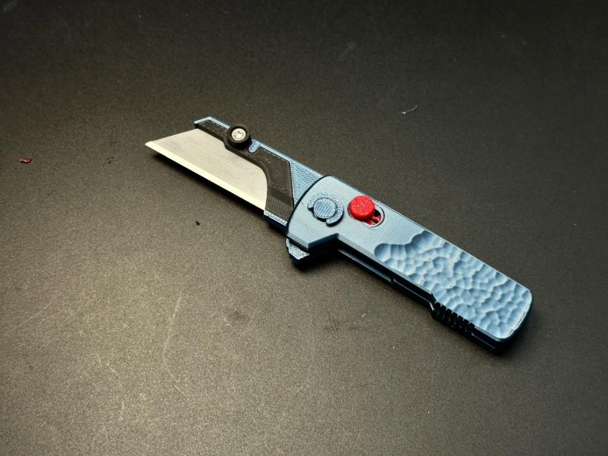
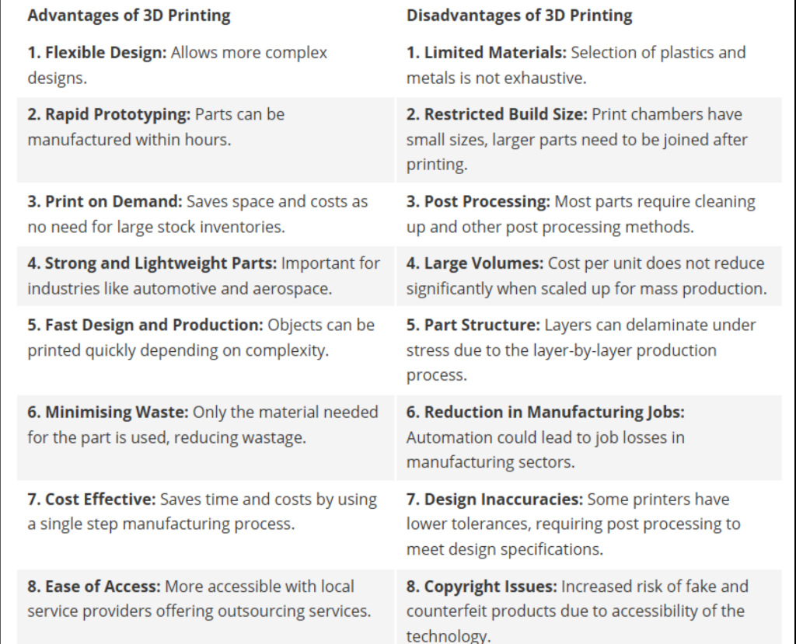

PHASE 02 • WEEK 06
Laser Cutting & 3D Printing
Digital Fabrication Technologies
PAGE 1: LASER CUTTING
What is Laser Cutting & Engraving?
Laser Cutting is a thermal-based, non-contact subtractive manufacturing process that utilizes a high-intensity, focused coherent beam of laser light to melt, vaporize, or burn through flat sheet materials along computer-controlled vector paths.
When operating at reduced power or elevated scanning speeds, the beam performs Laser Engraving / Marking—vaporizing only a shallow surface layer of the material to produce high-contrast, frosted tactile graphics without slicing completely through the substrate.
1. Lab Safety & Safety Rules
[Missing Information: Please document the specific safety precautions followed during laser cutting, including: Laser safety, Exhaust system, Chiller, Earthing, Air assist, and General machine safety.]
2. Machine Details
| Parameter | Details |
|---|---|
| Make | [Missing: Please provide Make] |
| Model | [Missing: Please provide Model] |
| Bed size | [Missing: Please provide Bed size] |
| Laser tube wattage | [Missing: Please provide Wattage] |
| Control software | RDWorks V8 |
3. Materials Used
- Material type: Black Acrylic
- Workpiece Dimensions: 50 × 50 mm
- Thickness: [Missing: Please provide material thickness]
- Source: [Missing: Please provide material source]
4. Selected Design/Image
An existing geometric horse design was selected and modified by me to achieve the intended artwork structure for laser processing.

5. Image-to-DXF Conversion
[Missing Information: Please document the tool/software used, the conversion process, important steps followed, and provide relevant screenshot(s).]
6. File Preparation
[Missing Information: Please provide confirmed details on vector cleaning, scaling, closed paths, removal of unwanted/duplicate geometry, and final file verification.]
7. Nesting & Layout in RDWorks
[Missing Information: Please provide the actual RDWorks layout screenshot showing design placement, cutting/engraving layers, layer colours, and material layout.]
8. Final Machine Settings
| Material | Thickness | Operation | Speed | Min Power | Max Power | Passes | Freq |
|---|---|---|---|---|---|---|---|
| Black Acrylic | [Missing] | Laser Cutting | [Missing] | [Missing] | [Missing] | [Missing] | [Missing] |
| Black Acrylic | [Missing] | Laser Engraving | [Missing] | [Missing] | [Missing] | [Missing] | [Missing] |
9. Cutting Process

[Missing Information: Please provide any additional process photographs if required by the rubric.]
10. Final Result – Hero Shot

11. Problems Faced & Solutions
| Problem | Possible/Identified Cause | Solution Implemented | Final Outcome |
|---|---|---|---|
| [Missing Information: Please document any problems faced, their causes, solutions implemented, and final outcomes.] | |||
12. Reflection
[Missing Information: Please write a professional reflection covering what you learned, challenges faced, skills gained, improvements made, and what you would do differently in the future.]
13. Source Files
[Missing Information: DXF and AI files are not currently uploaded in the repository. Please provide the verified files to add download links.]
PAGE 2: 3D PRINTING
1. Printer Details

[Missing Information: A separate HTML table containing Make, Model, Build Volume, Nozzle Size, and Supported Materials is required to fully satisfy the rubric if the image above is insufficient.]
2. Slicer & Material
Slicer/Software: Bambu Studio
Material: PLA
The slicer (Bambu Studio) plays a crucial role in preparing the modified 3D model by converting the geometry into G-code—the layer-by-layer toolpath instructions and material extrusion commands required by the 3D printer.
3. Printer Limits & Capabilities
[Missing Information: Please explain the practical capabilities and limitations of the printer based on actual observations, including build volume, resolution, overhangs, support structures, material limitations, dimensional accuracy, and component fit for assembly.]
4. Why the Object Cannot Be Made Subtractively
[Missing Information: Please explain why the pocket knife geometry is difficult to manufacture using subtractive methods (e.g., complex geometry, internal features, multiple components, material removal limits) and discuss the advantages of additive manufacturing for this model.]
5. STL Definition
[Missing Information: Please explain what STL represents, its triangular surface-mesh structure, how the mesh represents geometry, why it is commonly used, and its role in the slicing workflow.]
6. Selected STL File
An existing pocket knife model consisting of multiple components intended for assembly was modified by me and selected for 3D printing.

7. Slicer Settings
| Parameter | Actual Final Setting | Unit |
|---|---|---|
| Nozzle Temperature | [Missing] | [Missing] |
| Bed Temperature | [Missing] | [Missing] |
| Layer Height | [Missing] | [Missing] |
| Infill Percentage | 15 | % |
| Infill Pattern | [Missing] | [Missing] |
| Wall/Shell Count | [Missing] | [Missing] |
| Print Speed | [Missing] | [Missing] |
| Supports | [Missing] | [Missing] |
| Adhesion Type | [Missing] | [Missing] |

8. Print Time & Material Weight
| Parameter | Estimated Value | Actual Value | Difference | Observation |
|---|---|---|---|---|
| Printing Time | 1 hour 24 minutes | [Not Yet Documented] | [Missing] | [Missing] |
| Material Weight | 20.75 grams | [Not Yet Documented] | [Missing] | [Missing] |
Estimated and actual values may differ due to slicing algorithm approximations, machine acceleration limits, or minor material density variances during extrusion.
10. Final Result


11. Source Files
[Missing Information: STL and G-code files are not currently uploaded in the repository. Please provide the verified files to add download links.]
References & Credits
- Software Used: RDWorks V8, Bambu Studio
- Original Design/Model Source: [Missing: Please provide the source of the original 3D model and vector design]
- Tutorials or Websites: [Missing: Please provide any links to tutorials used]
- AI Assistance: [Missing: Please specify if any AI tools were used for design or code generation]